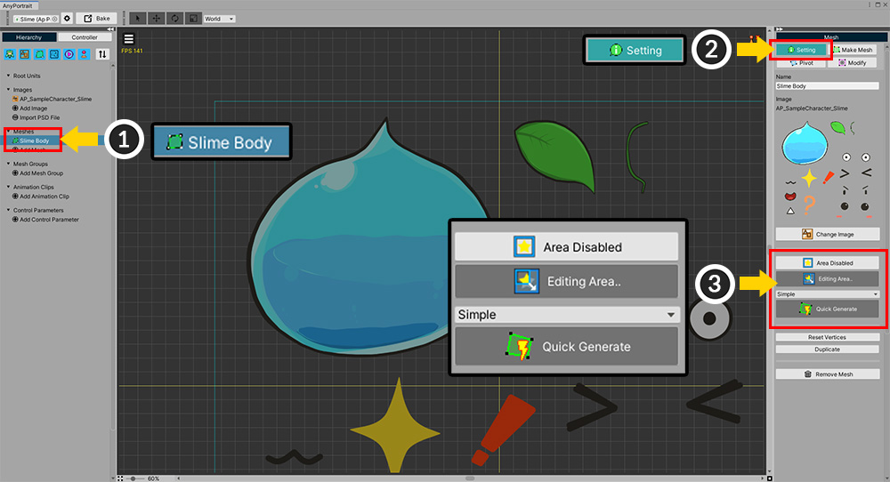
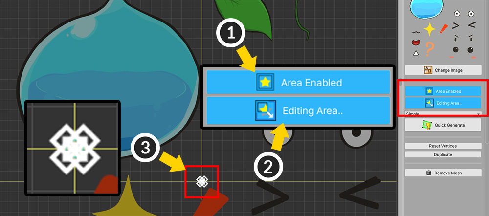
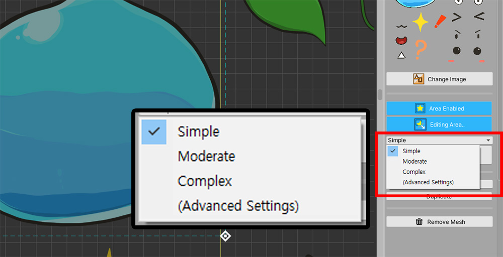
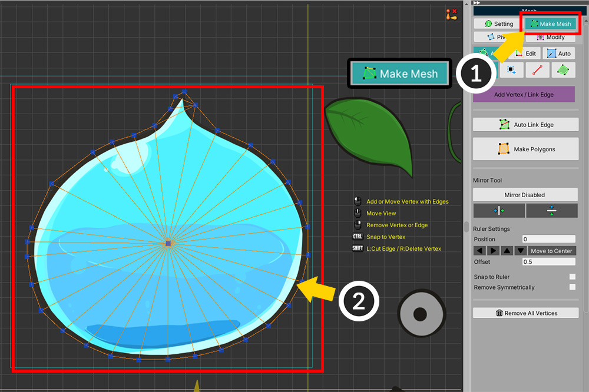
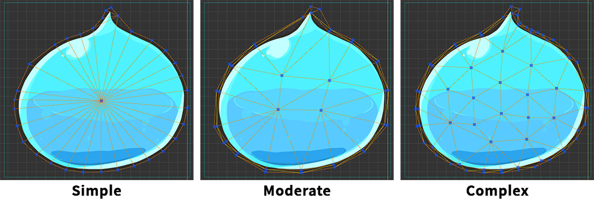
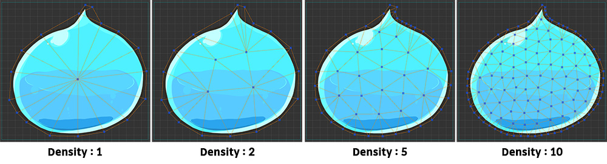
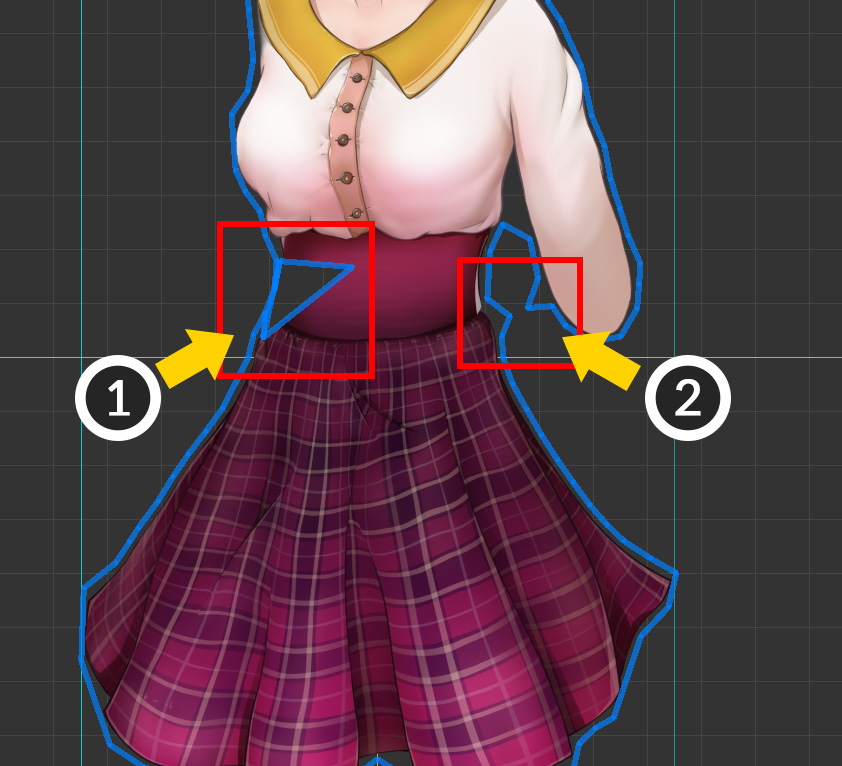
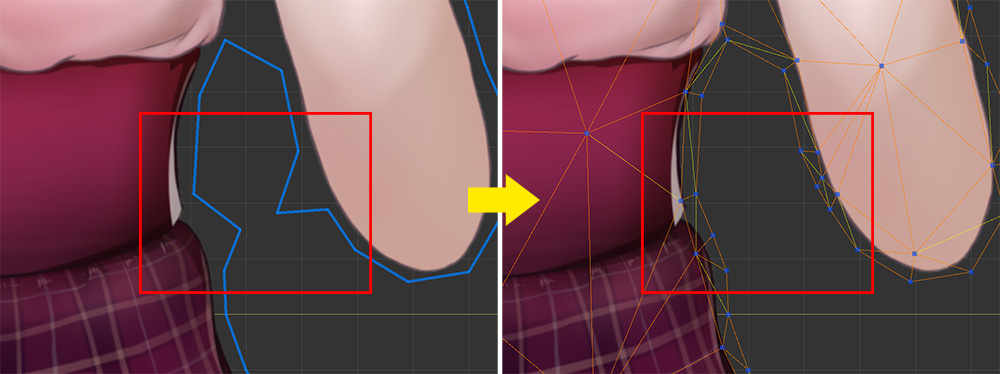

AnyPortrait > 메뉴얼 > 자동으로 메시 생성하기
자동으로 메시 생성하기
1.3.0
자동으로 작업을 대신해준다는 것은 언제나 좋은 이야기입니다.
특히, AnyPortrait에서 가장 많은 시간을 필요로 하는 하는 작업인 "메시 만들기"를 자동화한다면, 사용자들의 작업 효율은 크게 높아질 것입니다.
이 페이지에서는 자동으로 메시를 만드는 기능에 대해서 소개합니다.
참고
v1.3.0부터 새로운 자동 메시 생성 기능이 적용되며, v1.1.0에서 추가되었던 기존의 자동 메시 생성 기능은 삭제되었습니다.
Quick Generate를 이용하기

자동으로 메시를 만드는 간단한 방법을 소개합니다.
(1) 메시를 선택합니다.
(2) Setting 탭을 선택합니다.
(3) 자동으로 메시를 생성하기 위한 UI들을 볼 수 있습니다.

메시로 만들기 위한 이미지 영역을 먼저 설정해야합니다.
(1) Area Disabled 상태라면 버튼을 눌러서 Area Enabled 상태로 변경합니다.
(2) Edit Area 버튼을 눌러서 "영역 편집 모드"로 전환합니다.
(3) 영역 편집 모드가 켜지면 이미지 영역을 조절할 수 있는 포인트들이 나타납니다.

(1) 4개의 포인트들을 드래그하여 크기를 적절히 설정합니다.
불필요한 이미지가 영역 내에 포함되어 있다면, 나중에 메시를 편집하면 됩니다.
여유있게 이미지를 감싸도록 영역을 설정해주세요.
(2) 영역의 크기와 위치를 모두 설정했다면 Editing Area.. 버튼을 다시 눌러서 영역 편집 모드를 종료해도 됩니다.
다만 Area Enabled 상태는 유지해야합니다.

메시를 생성하기 위한 옵션을 선택합니다.
- Simple, Moderate, Complex 옵션들은 메시에 버텍스들을 얼마나 많이 생성할지를 결정합니다.
- Advanced Settings를 선택하면 상세 설정 화면으로 전환됩니다.
일단 Simple 옵션을 선택해봅시다.

(1) Quick Generate 버튼을 누릅니다.
(2) 메시가 생성된 것을 볼 수 있습니다.

(1) Make Mesh 탭을 선택하면, (2) 버텍스들이 어떻게 생성되었는지 확인할 수 있습니다.

이번에는 Moderate 옵션으로 메시를 생성해봅시다.
(1) 다시 Setting 탭을 선택합니다.
(2) Moderate 옵션을 선택합니다.
(3) Quick Generate 버튼을 누릅니다.
(4) 기존의 버텍스들을 삭제할지 물어보는 메시지가 나타납니다. Replace 버튼을 누르면 기존의 버텍스들이 삭제되고 새롭게 메시가 생성됩니다.
Simple 옵션을 이용하는 것보다 더 정교하게 이미지를 인식하여 메시를 생성하는 것을 볼 수 있습니다.

옵션에 따라서 버텍스가 더 정교하게 생성됩니다.
Simple, Moderate, Complex 순으로 메시가 더 정교하게 생성됩니다.
버텍스들이 더 많이 생성될 수록 이미지에 맞게 메시가 생성되지만, 그만큼 성능이 저하될 가능성이 있으므로 적절한 옵션을 이용하여 메시를 생성해주세요.
상세 설정을 이용하여 메시 생성하기

(1) Make Mesh 탭을 선택합니다.
(2) Auto 탭을 선택합니다.
(3) 자동 메시 생성을 위한 상세 설정들이 나타납니다. Quick Generate와 비슷해보이지만 조금 더 상세하게 설정할 수 있습니다.
(4) 이미지 영역에 관한 옵션입니다. 영역에 대한 값을 직접 입력할 수 있습니다.
(5) 메시 생성을 위한 설정들입니다. 밀도(Density), 외부 여백(Margin), 내부 여백(Padding)이 있습니다.
(6) Default 버튼을 누르면 자동 메시 생성 옵션이 초기화됩니다.
(7) Generate Mesh 버튼을 누르면 설정에 맞게 메시가 생성됩니다.
메시를 생성하는 방법은 Quick Generate와 동일합니다.
아래의 설명에서 설정값에 따라 메시가 어떻게 생성되는지를 확인해보세요.

밀도(Density)에 따른 메시 생성 결과의 차이입니다.
밀도 값이 커질 수록 버텍스들이 많이 생성됩니다.

외부 여백(Margin)은 이미지의 가장자리로부터 바깥 방향으로 얼마나 거리를 두고 가장자리 버텍스를 생성할지에 대한 옵션입니다.
값이 커질 수록 먼 거리에 버텍스들이 배치됩니다.
값이 너무 작으면 이미지의 굴곡에 따라 지나치게 버텍스들이 생성될 수 있습니다.

(1) 내부 여백(Padding)을 설정하는 방법입니다.
(2) 이 옵션은 기본적으로 꺼진 상태이므로 체크박스를 눌러서 켜줍니다.
(3) 거리 값을 입력합니다.
(4) 메시를 생성하면 이미지의 가장자리로부터 안쪽으로 버텍스들이 생성된 것을 볼 수 있습니다.
내부 여백은 Morph나 Rigging에 의하여 이미지가 변형될 경우, 이미지의 가장자리에서 발생하는 왜곡을 줄여주는 역할을 합니다.
자동 메시 생성 기능의 특징
v1.3.0에서 개선된 자동 메시 생성의 특징을 몇가지 소개합니다.

위와 같이 영역 내에 분리되어 있는 이미지들이 있다면, 각각에 대해서 메시의 폴리곤들이 생성됩니다.
다만, 이미지들의 거리가 가깝거나 복잡하게 배치되어 있다면, 이미지들이 연결된 것으로 인식을 합니다.

(1) PSD 파일을 가져와서 캐릭터를 생성하면 기본적으로 이미지 영역이 설정되어 있는 상태입니다.
(2) 따라서 바로 Quick Generate 버튼을 눌러서 빠르게 메시를 생성할 수 있습니다.
생성된 메시를 수정하기

자동으로 메시를 생성하는 기능은 이전 버전보다 더 효과적이고 정교하게 메시를 만들 수 있지만, 완벽하지는 않습니다.
따라서 이미지의 형태나 생성 옵션에 따라서는 위와 같은 에러가 발생할 수 있습니다.
(1) 내부의 버텍스들이 이상하게 배치되어 폴리곤을 생성하지 못한 경우입니다.
(2) 이미지의 굴곡을 잘못 인식하여 버텍스들이 튀어나온 경우입니다.
이러한 에러를 발견했다면 직접 메시를 수정해야합니다.

(1) Make Mesh 탭을 선택합니다.
(2) 메시를 편집하는 도구들을 필요에 맞게 이용합니다.
(3) 문제가 된 부분의 버텍스들을 이동, 삭제, 추가하여 적절하게 수정합니다.
(4) Make Polygons 버튼을 눌러서 메시를 완성합니다.

버텍스가 이미지 형태를 잘못 인식한 경우에도 같은 방식으로 수정해줍시다.